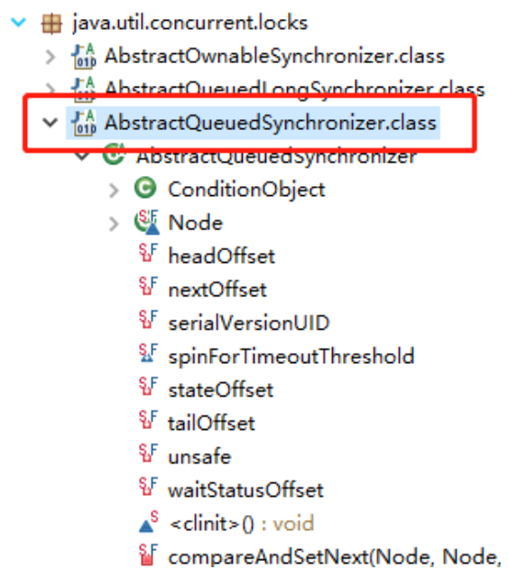

Java的锁之AQS原理（浅析）
前言
AQS的全称为（AbstractQueuedSynchronizer），这个类在java.util.concurrent.locks包下面 ，它提供了一种实现阻塞锁和一系列依赖FIFO等待队列的同步器的框架，ReentrantLock、Semaphore、CountDownLatch、CyclicBarrier等并发类均是基于AQS来实现的，具体用法是通过继承AQS实现其模板方法，然后将子类作为同步组件的内部类。

基本框架
在阅读源码前，首先阐述AQS的基本思想及其相关概念。
AQS基本框架如下图所示：
AQS维护了一个volatile语义(支持多线程下的可见性)的共享资源变量state和一个FIFO线程等待队列(多线程竞争state被阻塞时会进入此队列)。
State
首先说一下共享资源变量state，它是int数据类型的，其访问方式有3种：
- getState()
- setState(int newState)
- compareAndSetState(int expect, int update)
上述3种方式均是原子操作，其中compareAndSetState()的实现依赖于Unsafe类的compareAndSwapInt()方法。
1 | private volatile int state; |
资源的共享方式分为2种：
- 独占式(Exclusive)
只有单个线程能够成功获取资源并执行，如ReentrantLock。
- 共享式(Shared)
多个线程可成功获取资源并执行，如Semaphore/CountDownLatch等。
AQS将大部分的同步逻辑均已经实现好，继承的自定义同步器只需要实现state的获取(acquire)和释放(release)的逻辑代码就可以，主要包括下面方法：
tryAcquire(int)：独占方式。尝试获取资源，成功则返回true，失败则返回false。tryRelease(int)：独占方式。尝试释放资源，成功则返回true，失败则返回false。tryAcquireShared(int)：共享方式。尝试获取资源。负数表示失败；0表示成功，但没有剩余可用资源；正数表示成功，且有剩余资源。tryReleaseShared(int)：共享方式。尝试释放资源，如果释放后允许唤醒后续等待结点返回true，否则返回false。isHeldExclusively()：该线程是否正在独占资源。只有用到condition才需要去实现它。
AQS需要子类复写的方法均没有声明为abstract，目的是避免子类需要强制性覆写多个方法，因为一般自定义同步器要么是独占方法，要么是共享方法，只需实现tryAcquire-tryRelease、tryAcquireShared-tryReleaseShared中的一种即可。
当然，AQS也支持子类同时实现独占和共享两种模式，如ReentrantReadWriteLock。
CLH队列(FIFO)
AQS是通过内部类Node来实现FIFO队列的，源代码解析如下：
1 | static final class Node { |
可以看到，waitStatus非负的时候，表征不可用，正数代表处于等待状态，所以waitStatus只需要检查其正负符号即可，不用太多关注特定值。
获取资源(独占模式)
acquire(int)
首先讲解独占模式(Exclusive)下的获取/释放资源过程，其入口方法为:
1 | public final void acquire(int arg) { |
tryAcquire(arg)为线程获取资源的方法函数，在AQS中定义如下：
1 | protected boolean tryAcquire(int arg) { |
很明显，该方法是空方法，且由protected修饰，说明该方法需要由子类即自定义同步器来实现。
acquire()方法至少执行一次tryAcquire(arg)，若返回true，则acquire直接返回，否则进入acquireQueued(addWaiter(Node.EXCLUSIVE), arg)方法。
acquireQueued方法分为3个步骤：
- addWriter()将当前线程加入到等待队列的尾部，并标记为独占模式；
- acquireQueued()使线程在等待队列中获取资源，直到获取到资源返回，若整个等待过程被中断过，则返回True，否则返回False。
- 如果线程在等待过程中被中断过，则先标记上，待获取到资源后再进行自我中断selfInterrupt()，将中断响应掉。
下面具体看看过程中涉及到的各函数：
tryAcquire(int)
tryAcquire尝试以独占的模式获取资源，如果获取成功则返回True，否则直接返回False，默认实现是抛出UnsupportedOperationException，具体实现由自定义扩展了AQS的同步器来完成。
addWaiter(Node)
addWaiter为当前线程以指定模式创建节点，并将其添加到等待队列的尾部，其源码为：
1 | private Node addWaiter(Node mode) { |
再看enq(node)方法：
1 | private Node enq(final Node node) { |
可以看到，常规插入与快速插入相比，有2点不同：
- 常规插入是自旋过程(for(;;))，能够保证节点插入成功；
- 比快速插入多包含了1种情况，即当前等待队列为空时，需要初始化队列，即将待插入节点设置为头结点，同时为尾节点(因为只有一个嘛)。
常规插入与快速插入均依赖于CAS，其实现依赖于unsafe类，具体代码如下：
1 | private final boolean compareAndSetHead(Node update) { |
unsafe中的cas操作均是native方法，由计算机CPU的cmpxchg指令来保证其原子性。
接着看acquireQueued()方法：
acquireQueued(Node, int)
相关说明已在代码中注释：
1 | final boolean acquireQueued(final Node node, int arg) { |
具体看一下shouldParkAfterFailedAcquire函数：
1 | // shouldParkAfterFailedAcquire是通过前继节点的waitStatus值来判断是否阻塞当前节点的线程的 |
parkAndCheckInterrupt()函数则简单很多，主要调用LockSupport类的park()方法阻塞当前线程，并返回线程是否被中断过。
1 | private final boolean parkAndCheckInterrupt() { |
至此，独占模式下，线程获取资源acquire的代码就跟完了，总结一下过程：
- 首先线程通过tryAcquire(arg)尝试获取共享资源，若获取成功则直接返回，若不成功，则将该线程以独占模式添加到等待队列尾部，tryAcquire(arg)由继承AQS的自定义同步器来具体实现；
- 当前线程加入等待队列后，会通过acquireQueued方法基于CAS自旋不断尝试获取资源，直至获取到资源；
- 若在自旋过程中，线程被中断过，acquireQueued方法会标记此次中断，并返回true。
- 若acquireQueued方法获取到资源后，返回true，则执行线程自我中断操作selfInterrupt()。
1 | static void selfInterrupt() { |
释放资源(独占模式)
讲完获取资源，对应的讲一下AQS的释放资源过程，其入口函数为：
1 | public final boolean release(int arg) { |
逻辑并不复杂，通过tryRelease(arg)来释放资源，和tryAcquire类似，tryRelease也是有继承AQS的自定义同步器来具体实现。
tryRelease(int)
该方法尝试释放指定量的资源。
1 | protected boolean tryRelease(int arg) { |
unparkSuccessor(Node)
该方法主要用于唤醒等待队列中的下一个阻塞线程。
1 | private void unparkSuccessor(Node node) { |
后继节点的阻塞线程被唤醒后，就进入到acquireQueued()的if (p == head && tryAcquire(arg))的判断中，此时被唤醒的线程将尝试获取资源。
当然，如果被唤醒的线程所在节点的前继节点不是头结点，经过shouldParkAfterFailedAcquire的调整，也会移动到等待队列的前面，直到其前继节点为头结点。
讲解完独占模式下资源的acquire/release过程，下面开始讲解共享模式下，线程如何完成资源的获取和共享。
获取资源(共享模式)
理解了独占模式下，资源的获取和释放过程，则共享模式下也就so easy了，首先看一下方法入口：
1 | public final void acquireShared(int arg) { |
执行tryAcquireShared方法获取资源，若获取成功则直接返回，若失败，则进入等待队列，执行自旋获取资源，具体由doAcquireShared方法来实现。
tryAcquireShared(int)
同样的，tryAcquireShared(int)由继承AQS的自定义同步器来具体实现。
1 | protected int tryAcquireShared(int arg) { |
其返回值为负值代表失败；0代表获取成功，但无剩余资源；正值代表获取成功且有剩余资源，其他线程可去获取。
doAcquireShared(int)
1 | private void doAcquireShared(int arg) { |
可以发现，doAcquireShared与独占模式下的acquireQueued大同小异，主要有2点不同：
- doAcquireShared将线程的自我中断操作放在了方法体内部；
- 当线程获取到资源后，doAcquireShared会将当前线程所在的节点设为头结点，若资源有剩余则唤醒后续节点，比acquireQueued多了个唤醒后续节点的操作。
上述方法体现了共享的本质，即当前线程吃饱了后，若资源有剩余，会招呼后面排队的来一起吃，好东西要大家一起分享嘛，哈哈。
下面具体看一下setHeadAndPropagate(Node, int)函数：
1 | private void setHeadAndPropagate(Node node, int propagate) { |
可以看到，实际执行唤醒后继节点的方法是doReleaseShared()，继续追踪：
1 | private void doReleaseShared() { |
释放资源(共享模式)
首先进入到方法入口：
1 | public final boolean releaseShared(int arg) { |
同样的，tryReleaseShared(int)由继承AQS的自定义同步器来具体实现。
doReleaseShared()上节讲解setHeadAndPropagate已说明过，不再赘述。
至此，共享模式下的资源获取/释放就讲解完了，下面以一个具体场景来概括一下：
整个获取/释放资源的过程是通过传播完成的，如最开始有10个资源，线程A、B、C分别需要5、4、3个资源。
- A线程获取到5个资源，其发现资源还剩余5个，则唤醒B线程；
- B线程获取到4个资源，其发现资源还剩余1个，唤醒C线程；
- C线程尝试取3个资源，但发现只有1个资源，继续阻塞；
- A线程释放1个资源，其发现资源还剩余2个，故唤醒C线程；
- C线程尝试取3个资源，但发现只有2个资源，继续阻塞；
- B线程释放2个资源，其发现资源还剩余4个，唤醒C线程；
- C线程获取3个资源，其发现资源还剩1个，继续唤醒后续等待的D线程；
- ……
总结
本文主要介绍了AQS在独占和共享两种模式下，如何进行资源的获取和释放(tryAcquire-tryRelease、tryAcquireShared-tryReleaseShared)，需要注意的是，在acquire()和acquireShared()方法中，线程在阻塞过程中均是忽略中断的。
AQS也可以通过acquireInterruptibly()/acquireSharedInterruptibly()来支持线程在等待过程中响应中断。